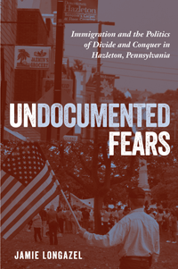

<body bgcolor="#FFFFFF" text="#000000" link="#0000FF" vlink="#CC0000" alink="#CC0000"><center><hr width="350" size="1" align="center" noshade><p>
<i>How the local politics of immigration pit working people against one another</i>
<br><hr width="350" size="1" align="center" noshade><p><a href="https://cdcshoppingcart.uchicago.edu/Cart/ChicagoBook.aspx?ISBN=&&PRESS=temple" target="_top">Buy this book!</a> | <a href="https://cdcshoppingcart.uchicago.edu/Cart/Cart.aspx?PRESS=temple" target="_top">View Cart</a> | <a href="https://cdcshoppingcart.uchicago.edu/Cart/Cart.aspx?PRESS=temple" target="_top">Check Out</a></p><p></p></center><!--none//--><h1>Undocumented Fears</h1>
<H2>Immigration and the Politics of Divide and Conquer in Hazleton, Pennsylvania</H2>
<h3>Jamie Longazel</h3>
paper: $27.95, Mar 16<BR>EAN:&nbsp;978-1-4399-1268-3<BR><font color=#990033>Not Yet Published Preorder</FONT><font size=-7><br>&nbsp;</font></p><p class="info">cloth: $74.50, Mar 16<BR>EAN:&nbsp;978-1-4399-1267-6<BR><font color=#990033>Not Yet Published Preorder</FONT><font size=-7><br>&nbsp;</font></p><p class="info">e-book: $27.95, Mar 16<BR>EAN:&nbsp;978-1-4399-1269-0<BR><font color=#990033>Not Yet Published Preorder</FONT><font size=-7><br>&nbsp;</font></p></p></td></tr></table>
<BR> <p class="info">226 pp<BR> 6 x 9<BR> 1&nbsp;color&nbsp;illustrations<BR></P> <p class="info"><font size=-7>&nbsp;</font></p><p class="info">
</P><BLOCKQUOTE><p>
“<i>Using a magnifying lens to study immigrant bashing in his hometown, Jamie Longazel brings into sharp focus the anti-Latino racism at the heart of national politics today. Even as we as a society struggle to build solidarity across racial divisions, powerful forces seek advantage in tearing us farther apart. The concentrated focus&nbsp;of&nbsp;</i>Undocumented Fears<i> helps us understand not only why this occurs but also how we might help replace fear with friendship, social division with a sense of shared humanity.</i>”—<b>Ian F. Haney López</b>, John H. Boalt Professor of Law, University of California–Berkeley, and author of <i>Dog Whistle Politics: How Coded Racial Appeals Have Reinvented Racism and Wrecked the Middle Class
<br /></i>
<br></BLOCKQUOTE>
<p>
The Illegal Immigration Relief Act (IIRA), passed in the small Rustbelt city of Hazleton, Pennsylvania in 2006, was a local ordinance that laid out penalties for renting to or hiring undocumented immigrants and declared English the city’s official language. The notorious IIRA gained national prominence and kicked off a parade of local and state-level legislative initiatives designed to crack down on undocumented immigrants. <br>
<p>In his cogent and timely book, <i>Undocumented</i> <i>Fears</i>, Jamie Longazel uses the debate around Hazleton’s controversial ordinance as a case study that reveals the mechanics of contemporary divide and conquer politics. He shows how neoliberal ideology, misconceptions about Latina/o immigrants, and nostalgic imagery of “Small Town, America” led to a racialized account of an undocumented immigrant “invasion,” masking the real story of a city beset by large-scale loss of manufacturing jobs.<br>
<p>Offering an up-close look at how the local debate unfolded in the city that set off this broader trend, <i>Undocumented Fears</i> makes an important connection between immigration politics and the perpetuation of racial and economic inequality.
<br>
<P CLASS="top"><A HREF="#top">BACK TO TOP</A></P>&nbsp;
<BR>&nbsp;
<h2>Reviews</h2>
<p>
“Undocumented Fears <i>offers an incredibly rich and insightful analysis of how the political dynamics in a struggling former coal mining town resulted in its becoming ground zero in the raging national debate over immigration. Longazel provides a bird’s-eye view of the politics—racial and otherwise—that led Hazleton, Pennsylvania, to enact laws designed to punish undocumented immigrants, with Latino migrants in the crosshairs.&nbsp;The clash of Latino immigrants with the ‘small town America’ ideal is a gripping story that deserves the scholarly attention offered by Longazel.&nbsp;As some might say after reading</i>&nbsp;Undocumented Fears, <i>‘Only in America.’”</i>—<b>Kevin Johnson</b>, Dean and Mabie-Apallas Professor of Public Interest Law and Chicana/o Studies, University of California–Davis School of Law, and author of <i>The “Huddled Masses” Myth: Immigration and Civil Rights </i><b>
<br /></b>
<br>
<P CLASS="top"><A HREF="#top">BACK TO TOP</A></P>&nbsp;<P>
</P><BR>&nbsp;
<H2>About the Author(s)</H2><p>
<b>Jamie Longazel</b> is Assistant Professor of Sociology and a Human Rights Center Research Fellow at the University of Dayton and co-author (with Benjamin Fleury-Steiner) of<i> The Pains of Mass Imprisonment</i>.
<br>
<P CLASS="top"><A HREF="#top">BACK TO TOP</A></P>
<p><h2>Subject Categories</h2><A HREF="/tempress/sociology.html" TARGET="_top">Sociology</a><BR><A HREF="/tempress/political.html" TARGET="_top">Political Science and Public Policy</a><BR><A HREF="/tempress/immigration.html" TARGET="_top">Immigration Studies</a><BR><A HREF="/tempress/law.html" TARGET="_top">Law and Criminology</a>
</p>
<P>
</P>
<p align="center"><a href="https://cdcshoppingcart.uchicago.edu/Cart/ChicagoBook.aspx?ISBN=&&PRESS=temple" target="_top">Buy this book!</a> | <a href="https://cdcshoppingcart.uchicago.edu/Cart/Cart.aspx?PRESS=temple" target="_top">View Cart</a> | <a href="https://cdcshoppingcart.uchicago.edu/Cart/Cart.aspx?PRESS=temple" target="_top">Check Out</a></p><p><font face="Arial" size="1"><a href="copyright.html" onMouseOver="window.status='Web Copyright Policy';return true;" onMouseOut="window.status=''" title="Web Copyright Policy">&copy;</a> <a href="http://www.temple.edu" target="new" onMouseOver="window.status='Link to Temple University home page';return true;" onMouseOut="window.status=''" title="Link to Temple University home page">Temple University</a>. All Rights Reserved. http://www.temple.edu/tempress/titles/2370_reg.html</font></p>